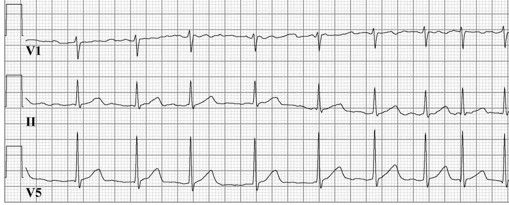
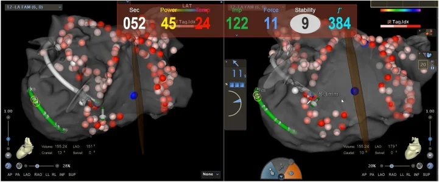

Atualizado em 4 de novembro de 2026
Ablação de fibrilação atrial: o que mudou e quando ela é indicada
A fibrilação atrial (FA) é a arritmia sustentada mais comum. Na FA, os átrios, que são as câmaras superiores do coração, passam a receber impulsos elétricos desorganizados, e o coração bate de forma irregular e muitas vezes rápida. Isso pode causar palpitação, cansaço e falta de ar. A FA também aumenta o risco de AVC e de insuficiência cardíaca.

.jpg){kind=link}
A ablação por cateter trata a origem mais frequente desses impulsos: as veias pulmonares, que chegam ao átrio esquerdo. Por cateteres introduzidos pela veia da virilha, o eletrofisiologista faz o isolamento elétrico das veias pulmonares, criando uma barreira que impede esses impulsos de chegarem ao átrio.
Uma coisa a ablação não faz por si só: ela não dispensa o anticoagulante. A decisão sobre o anticoagulante segue o risco de AVC de cada pessoa, e não o sucesso do procedimento [1].
O que mudou nos últimos anos?
Durante muito tempo, a ablação foi tratada como um último recurso, reservado a quem já tinha tentado um ou mais remédios antiarrítmicos sem sucesso. Os estudos dos últimos anos mudaram essa ordem.
Ablação como primeiro tratamento. Em 2021, três estudos randomizados compararam a ablação feita logo no início com os remédios antiarrítmicos, em pessoas com FA paroxística (a que vem em episódios e para sozinha):
- No STOP AF First, 74,6% dos pacientes da ablação estavam livres de recorrência em 12 meses, contra 45,0% no grupo dos remédios [2].
- No EARLY-AF, todos os pacientes usaram um monitor implantável, que registra cada episódio. Em 1 ano, a recorrência sintomática foi de 11,0% com ablação e de 26,2% com remédios [3].
- No acompanhamento de 3 anos do EARLY-AF, a FA evoluiu para a forma persistente em 1,9% dos pacientes da ablação e em 7,4% dos que usaram remédios [4]. Isso sugere que tratar cedo pode reduzir a progressão da doença.
Controle do ritmo precoce. O EAST-AFNET 4 acompanhou 2.789 pacientes com FA diagnosticada havia no máximo 1 ano. Buscar o ritmo normal cedo, com remédios ou ablação, reduziu o conjunto de morte cardiovascular, AVC e internações por insuficiência cardíaca ou síndrome coronariana (3,9 contra 5,0 eventos por 100 pacientes por ano) [5].
Insuficiência cardíaca. Antes, um coração mais fraco era motivo de cautela. Hoje, para pacientes selecionados, é uma das situações em que a ablação mostrou mais benefício:
- No CASTLE-AF, em pessoas com FA e coração com força de bombeamento reduzida, a ablação reduziu o desfecho de morte ou internação por piora da insuficiência cardíaca (28,5% contra 44,6%) [6].
- No CASTLE-HTx, em insuficiência cardíaca avançada, esse desfecho ocorreu em 8% dos pacientes da ablação e em 30% dos tratados só com remédios. O desfecho incluía morte, implante de dispositivo de assistência ventricular ou transplante cardíaco [7].
Uma leitura honesta do CABANA. O maior estudo da área, com 2.204 pacientes, não mostrou diferença na análise principal, que combinava morte, AVC incapacitante, sangramento grave e parada cardíaca (8,0% com ablação contra 9,2% com remédios) [8]. O mesmo estudo mostrou menos recorrência da arritmia e melhora maior na qualidade de vida com a ablação [9]. Ou seja: para a maioria das pessoas, a ablação melhora sintomas e qualidade de vida. A ablação não mostrou reduzir mortalidade em todos os pacientes. Esse benefício foi visto em grupos específicos, como na insuficiência cardíaca.
Com esse conjunto de evidências, as diretrizes americana (2023) e europeia (2024) passaram a considerar a ablação uma opção de primeira linha para pacientes selecionados com FA paroxística sintomática. A decisão é compartilhada entre médico e paciente [1, 10].
O que mudou na tecnologia?
O procedimento também mudou:
- Mapeamento eletroanatômico 3D. O computador reconstrói o átrio em três dimensões e mostra a posição do cateter em tempo real.
- Ecocardiografia intracardíaca (ICE). É um ultrassom de dentro do coração. Mostra as estruturas e o contato do cateter durante todo o procedimento, o que permite fazer a ablação com pouco ou nenhum raio X. Quando indicado, isso vale inclusive para gestantes.
- Ablação por campo pulsado (PFA). Em vez de calor ou frio, usa pulsos elétricos muito curtos, que atingem o tecido do coração de forma mais seletiva e poupam estruturas vizinhas, como o esôfago.

Cada um desses temas tem um texto próprio. O que importa aqui é que hoje existem mais formas de adaptar o procedimento a cada paciente.
Para quem a ablação costuma ser indicada?
Em geral, a ablação é considerada para:
- quem tem sintomas da FA (palpitação, cansaço, falta de ar, menor tolerância ao esforço) e quer controlar o ritmo;
- quem tem FA paroxística, inclusive como primeira opção de tratamento, em decisão compartilhada;
- quem não tolera ou não respondeu aos remédios antiarrítmicos;
- quem tem insuficiência cardíaca em que a FA pode estar contribuindo para a piora do coração.
Quando é melhor evitar ou adiar a ablação?
A ablação não é a resposta para toda FA. Algumas situações pedem outro caminho ou outro momento:
- Causa tratável por trás da FA, como excesso de hormônio da tireoide ou consumo alto de álcool. Tratar a causa vem antes.
- Fatores de risco sem controle. Peso, pressão alta, apneia do sono e álcool influenciam diretamente a FA. No estudo LEGACY, quem perdeu 10% ou mais do peso e manteve essa perda teve uma chance 6 vezes maior de ficar livre da arritmia [11]. Em pessoas que bebiam regularmente, parar de beber reduziu a recorrência da FA de 73% para 53% em 6 meses [12]. Esses cuidados melhoram o resultado com ou sem ablação.
- Coágulo dentro do coração (trombo no átrio). O procedimento é adiado até o trombo ser tratado.
- Impossibilidade de usar anticoagulante no período do procedimento.
- FA persistente de longa data com átrio muito dilatado, em que a chance de manter o ritmo normal é menor.
- Ausência de sintomas e de benefício esperado. Quando a FA não causa sintomas nem piora o coração, controlar a frequência e prevenir o AVC pode ser suficiente.
- Fragilidade ou doenças graves associadas, em que o risco do procedimento supera o benefício.
Que resultado esperar, sem ilusão?
- Depende do tipo de FA. Os resultados são mais favoráveis na FA paroxística tratada cedo. Na FA persistente, e principalmente na de longa data, a chance de recorrência é maior.
- Depende de como se mede. No EARLY-AF, com monitor contínuo que registra até episódios de 30 segundos, 42,9% dos pacientes da ablação tiveram algum episódio no primeiro ano. Só 11,0% tiveram recorrência com sintomas, e o tempo mediano em FA foi de 0% [3]. Ter um episódio isolado não é o mesmo que o tratamento ter falhado.
- Os primeiros 3 meses são de cicatrização. Episódios nesse período são comuns e nem sempre significam que a ablação não funcionou. Os estudos só começam a contar a recorrência depois dele [2].
- Às vezes é preciso um segundo procedimento, para completar ou refazer o isolamento.
- Complicações graves são pouco frequentes, mas existem. No STOP AF First, eventos graves de segurança ocorreram em 1,9% dos pacientes em 12 meses [2]. No EARLY-AF, eventos adversos graves ocorreram em 3,2% dos pacientes da ablação e em 4,0% dos que usaram remédios [3]. Os riscos de cada caso são discutidos na consulta.
Como é o procedimento e a recuperação?
A ablação é feita no laboratório de eletrofisiologia do hospital, com sedação ou anestesia. A escolha depende do paciente e do tipo de procedimento, e é feita para cada caso. Os cateteres entram por uma veia da virilha, sem corte no peito. Em geral, o procedimento leva algumas horas, e a alta pode ser no mesmo dia ou depois de uma noite no hospital. A volta às atividades leves costuma ser em poucos dias, e o esforço físico intenso é evitado por um período curto. As orientações exatas, inclusive sobre remédios e anticoagulante, são individuais.
Perguntas frequentes
- A ablação de fibrilação atrial dói?
- O procedimento é feito com sedação ou anestesia, conforme o que for melhor para cada caso. Depois, pode haver desconforto no local da punção na virilha e, às vezes, no peito, por alguns dias.
- Depois da ablação, posso parar o anticoagulante?
- Não automaticamente. A decisão segue o risco de AVC de cada pessoa, e não apenas o resultado da ablação [1]. Ela é revista com o médico.
- Vou poder parar os remédios para arritmia?
- Em muitos casos, os antiarrítmicos são reduzidos ou suspensos depois do período de cicatrização. Isso depende da evolução de cada paciente.
- A ablação cura a fibrilação atrial?
- Ela pode eliminar ou reduzir muito os episódios, mas a FA é uma doença que pode progredir com a idade e com os fatores de risco. Por isso, o acompanhamento e o controle de peso, pressão, sono e álcool continuam importantes.
Agendamento
Agende uma avaliação com o Dr. Thiago
Na consulta, ele avalia o seu caso e explica as opções de tratamento. O agendamento é feito com a secretaria, pelo WhatsApp do local que preferir.
Leia também: Ecocardiografia intracardíaca (ICE) · Ablação por campo pulsado
Referências
- Van Gelder IC, Rienstra M, Bunting KV, et al. 2024 ESC Guidelines for the management of atrial fibrillation. Eur Heart J. 2024. doi:10.1093/eurheartj/ehae176
- Wazni OM, Dandamudi G, Sood N, et al. Cryoballoon ablation as initial therapy for atrial fibrillation (STOP AF First). N Engl J Med. 2021. doi:10.1056/NEJMoa2029554
- Andrade JG, Wells GA, Deyell MW, et al. Cryoablation or drug therapy for initial treatment of atrial fibrillation (EARLY-AF). N Engl J Med. 2021. doi:10.1056/NEJMoa2029980
- Andrade JG, Deyell MW, Macle L, et al. Progression of atrial fibrillation after cryoablation or drug therapy. N Engl J Med. 2023. doi:10.1056/NEJMoa2212540
- Kirchhof P, Camm AJ, Goette A, et al. Early rhythm-control therapy in patients with atrial fibrillation (EAST-AFNET 4). N Engl J Med. 2020. doi:10.1056/NEJMoa2019422
- Marrouche NF, Brachmann J, Andresen D, et al. Catheter ablation for atrial fibrillation with heart failure (CASTLE-AF). N Engl J Med. 2018. doi:10.1056/NEJMoa1707855
- Sohns C, Fox H, Marrouche NF, et al. Catheter ablation in end-stage heart failure with atrial fibrillation (CASTLE-HTx). N Engl J Med. 2023. doi:10.1056/NEJMoa2306037
- Packer DL, Mark DB, Robb RA, et al. Effect of catheter ablation vs antiarrhythmic drug therapy on mortality, stroke, bleeding, and cardiac arrest (CABANA). JAMA. 2019. doi:10.1001/jama.2019.0693
- Mark DB, Anstrom KJ, Sheng S, et al. Effect of catheter ablation vs medical therapy on quality of life among patients with atrial fibrillation (CABANA). JAMA. 2019. doi:10.1001/jama.2019.0692
- Joglar JA, Chung MK, Armbruster AL, et al. 2023 ACC/AHA/ACCP/HRS Guideline for the diagnosis and management of atrial fibrillation. Circulation. 2024. doi:10.1161/CIR.0000000000001193
- Pathak RK, Middeldorp ME, Meredith M, et al. Long-term effect of goal-directed weight management in an atrial fibrillation cohort (LEGACY). J Am Coll Cardiol. 2015. doi:10.1016/j.jacc.2015.03.002
- Voskoboinik A, Kalman JM, De Silva A, et al. Alcohol abstinence in drinkers with atrial fibrillation. N Engl J Med. 2020. doi:10.1056/NEJMoa1817591